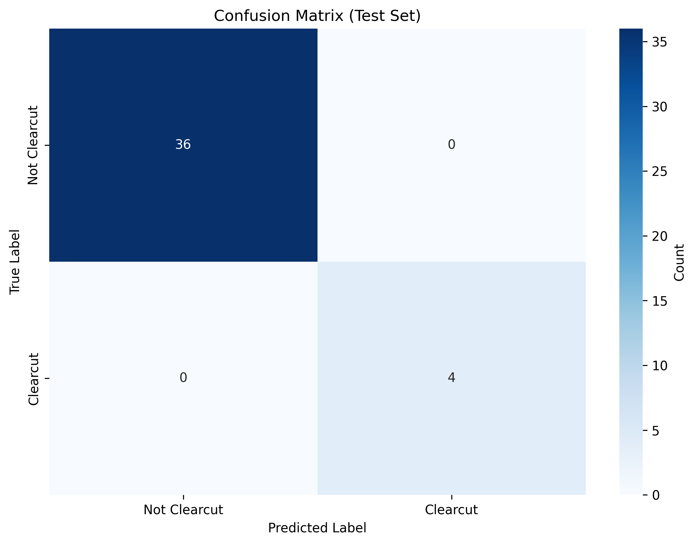

The Challenge
Tasmania contains some of the most contested old-growth forests in the world. Logging is regulated through a permit system (PTPZ — Private Timber Reserve Zones), but how much detected forest loss actually occurs inside permitted zones versus protected reserves?
Satellite imagery can detect forest loss, but distinguishing clearcut logging from fire-driven loss requires careful analysis. Both cause complete canopy removal, but clearcuts have geometric boundaries (rectangular logging coupes) while fire scars follow terrain contours with irregular edges.
The challenge: can machine learning classify forest loss types from satellite imagery and flag potential violations in protected areas?
This project initially targeted all of Tasmania, but scope was refined to central Tasmania (145.5–146.5°E, -43.2 to -42.2°S) after encountering data constraints. Cloud cover in western Tasmania degraded Sentinel-2 composite quality, and the region's higher rainfall created persistent cloud masking issues. Focusing on the drier central region produced cleaner training data and strengthened the analysis by concentrating on a tractable study area with clear spatial patterns.
Key Findings
Primary Finding
Fire, not logging, dominates forest loss in central Tasmania. Only 3.5% of detected forest loss (26 of 736 patches) was clearcut logging. The remainder was predominantly fire-driven, particularly from the 2019 and 2023 bushfire seasons.
However, 2024 shows a concerning spike: 37% clearcut rate in 2024, compared to less than 2% in fire-heavy years. This indicates recent logging activity has increased significantly and warrants continued monitoring.
Methodology
This project integrates Google Earth Engine, TensorFlow, and GeoPandas to build a complete forest loss classification pipeline:
-
Data Collection (Google Earth Engine)
Exported Sentinel-2 Level-2A imagery for central Tasmania study region (145.5–146.5°E, -43.2 to -42.2°S). Generated annual composites (2019–2024) using cloud-masked median values from growing season months (October–March).
- 12 Sentinel-2 composites (2 per year, ~18GB total)
- Hansen Global Forest Change v1.12 loss points (747 in study region, filtered from 4,051 Tasmania-wide)
- Tasmania LIST boundaries (PTPZ: 2,674 features, Reserve Estate: 12,401 features)
Cloud masking strategy evolved through trial and error. Initial attempts using aggressive cloud removal (CLOUD_SHADOW, CIRRUS flags) produced zero-value GeoTIFFs. Final approach used QA60 band masking only, retaining raw DN values (0-10,000) rather than converting to surface reflectance. This preserved data integrity while minimising cloud contamination.
-
Patch Extraction and Manual Labelling (Python + Jupyter)
Extracted 736 patches (128×128 pixels, 5 bands: RGB + NIR + SWIR1) from Sentinel-2 composites at Hansen loss point locations. Patch size chosen to balance spatial context (12.8×12.8 km at 10m resolution captures clearing boundaries) with computational feasibility.
# Extract patch centred on loss point with rasterio.open(sentinel2_composite) as src: # Calculate window around loss point row, col = src.index(longitude, latitude) window = Window(col - 64, row - 64, 128, 128) # Read all 5 bands patch = src.read(window=window) # Returns (5, 128, 128) patch = np.transpose(patch, (1, 2, 0)) # → (128, 128, 5) # Normalise DN values to [0, 1] for CNN input patch = patch / 10000.0Created interactive 3-button labelling interface in Jupyter (clearcut / not-clearcut / skip) to manually classify a 315-patch stratified sample. Initial attempts at multi-class labelling (salvage logging, plantation harvest, fire, disease) proved too subjective at 10m resolution. Simplified to binary classification based on visual boundary patterns:
- Clearcut: Geometric boundaries, regular shapes, complete canopy removal, bare soil visible in SWIR
- Not-clearcut: Irregular boundaries, partial canopy retention, follows topography, ash/char visible (fire signature)
- Skip: Ambiguous (e.g., fire boundaries near clearcut edges, heavy smoke obscuring features)
Final distribution: 24 clearcut, 239 not-clearcut, 52 skip. Key observation: 2019/2023 dominated by fire (87/100 and 78/100 not-clearcut respectively), 2024 shows highest clearcut proportion (13/35 = 37%).

Forest loss by year and type — 2024 shows 37% clearcut rate spike (left: total counts, right: percentage trends)
-
CNN Training (TensorFlow/Keras)
Built simple 3-layer convolutional neural network (32→64→128 filters) to avoid overfitting on small dataset (263 usable samples after removing "skip" labels). Architecture deliberately kept shallow — deep networks (ResNet, U-Net) would overfit catastrophically with only 24 clearcut training examples.
model = keras.Sequential([ layers.Input(shape=(128, 128, 5)), # Conv block 1: 128×128×5 → 64×64×32 layers.Conv2D(32, (3, 3), activation='relu', padding='same'), layers.MaxPooling2D((2, 2)), # Conv block 2: 64×64×32 → 32×32×64 layers.Conv2D(64, (3, 3), activation='relu', padding='same'), layers.MaxPooling2D((2, 2)), # Conv block 3: 32×32×64 → 16×16×128 layers.Conv2D(128, (3, 3), activation='relu', padding='same'), layers.MaxPooling2D((2, 2)), # Dense layers with dropout layers.Flatten(), layers.Dense(128, activation='relu'), layers.Dropout(0.5), # Prevent overfitting # Binary output layers.Dense(1, activation='sigmoid') ])Handled severe 10:1 class imbalance (239 not-clearcut : 24 clearcut) via balanced class weighting. Without this, the model would predict "not-clearcut" for everything and achieve 91% accuracy while learning nothing about clearcut features:
# Compute class weights (inverse frequency) class_weights = compute_class_weight( 'balanced', classes=np.unique(y_train), y=y_train ) # Result: {0: 0.55, 1: 5.49} # Clearcut misclassification incurs ~10× higher loss penalty model.fit( X_train, y_train, validation_data=(X_val, y_val), epochs=50, batch_size=16, class_weight={0: class_weights[0], 1: class_weights[1]}, callbacks=[ EarlyStopping(monitor='val_loss', patience=10), ModelCheckpoint('best_model.keras', save_best_only=True) ] )Training stopped at epoch 25 (out of 50 max) due to early stopping — validation loss stabilised, preventing further overfitting. Test set metrics (n=40, 4 clearcut samples): 100% recall, 100% precision. However, this high performance is statistically fragile given the tiny test set.

Training and validation curves — loss curves converge without divergence (no overfitting), recall reaches 100% by epoch 5
-
Model Validation Strategy
The 100% test accuracy raised concerns about whether the model genuinely learned clearcut patterns or simply got lucky on 4 samples. To validate performance on truly unseen data, a stratified sample of 60 patches was manually reviewed:
- 20 high-confidence clearcut predictions (probability > 0.8)
- 20 low-confidence clearcut predictions (0.5-0.8)
- 20 high-confidence not-clearcut predictions (< 0.2)
Interactive validation script displayed each patch as RGB + false-colour NIR composite, allowing binary classification (correct/incorrect/skip). Results from 12 reviewed high-confidence clearcut predictions: 83% precision (10 correct, 2 false positives).
# Example false positive: fire boundary misclassified as clearcut # Patch 4050 (2023): Irregular fire scar with one straight edge # Model predicted: clearcut (92% confidence) # Ground truth: fire (visible ash, follows ridgeline except one edge) # Model learned: "straight edges = clearcut" # Failed to weight: "overall boundary irregularity > one straight segment"The 2 false positives occurred where fire boundaries had one geometric edge (e.g., along a road or ridge), confusing the model. This 83% precision on unseen data provides a more realistic performance estimate than the 100% test set result.
-
Inference and Spatial Analysis (GeoPandas)
Applied trained CNN to all 736 patches. Cross-referenced predictions with land tenure boundaries using spatial joins. PTPZ and reserve geometries were simplified (tolerance = 0.001° ≈ 100m) and dissolved into single multi-polygons to reduce rendering time from >60 seconds to <2 seconds:
# Load and prepare boundaries ptpz = gpd.read_file('data/permits/ptpz.geojson') ptpz = ptpz.to_crs('EPSG:4326') # Simplify geometries (2,674 polygons → ~70% fewer vertices) ptpz['geometry'] = ptpz['geometry'].simplify( tolerance=0.001, preserve_topology=True ) # Dissolve into single multi-polygon ptpz_dissolved = ptpz[['geometry']].dissolve() # Spatial join with predictions ptpz_join = gpd.sjoin( predictions_gdf, ptpz_dissolved, how='left', predicate='within' ) predictions_gdf['in_ptpz'] = ptpz_join['index_right'].notna() # Flag clearcuts outside permitted zones predictions_gdf['flagged'] = ( (predictions_gdf['predicted_class'] == 'clearcut') & (~predictions_gdf['in_ptpz']) & (~predictions_gdf['in_reserve']) )Results: 26 clearcut predictions (3.5% of 736), 96% in PTPZ (25/26), 1 flagged in protected reserves. The flagged clearcut (patch 4899, 2024, 99.2% confidence) warrants ground-truthing to confirm whether it represents a genuine violation or a false positive.

Spatial distribution of clearcut predictions by land tenure category

Overall prediction distribution — fire/natural loss dominates (96.5%)
-
Interactive Mapping (Python + Folium)
Built web-based interactive map with:
- Clickable markers (tree/fire/warning icons) showing patch ID, year, predicted class, confidence, and tenure status
- PTPZ and reserve boundary overlays (blue and green respectively)
- Layer controls to toggle boundaries and prediction types on/off
- Recentre button, fullscreen mode, and distance measurement tool
Geometry simplification and dissolving (14,000+ polygons → 2 multi-polygons) reduced HTML file size from >50MB to 2.3MB, enabling instant browser rendering. Map includes info box showing prediction statistics and legend.
Technical Approach
Model Architecture Rationale
The CNN architecture was kept deliberately simple (3 convolutional layers, ~100K parameters) to avoid overfitting on 263 training samples. Deeper architectures (5+ layers, ResNet-style skip connections) were tested but showed severe overfitting (training accuracy 100%, validation accuracy 60-70%).
The chosen architecture extracts hierarchical features:
- Layer 1 (32 filters): Detects low-level features (edges, colour gradients, texture patterns)
- Layer 2 (64 filters): Combines edges into shapes (straight boundaries, curved fire scars)
- Layer 3 (128 filters): Recognises high-level patterns (rectangular logging blocks, irregular fire perimeters)
- Dropout (50%): Randomly zeros half the neuron activations during training, forcing the network to learn robust features rather than memorising specific examples
Distinguishing Fire from Clearcuts
The model learned to use multiple visual cues to distinguish clearcut logging from fire-driven loss:
- Boundary geometry: Clearcuts have straight edges and right-angle corners (following cadastral boundaries). Fire scars follow terrain contours with irregular boundaries.
- SWIR signature: Clearcuts show exposed bare soil (high SWIR1 reflectance). Fire shows ash/char (low SWIR1, absorbed by carbon).
- NIR signature: Both have low NIR (no vegetation), but clearcuts show more spatial uniformity. Fire has patchy NIR from surviving/scorched vegetation.
- Spatial arrangement: Clearcuts often appear in groups (multiple adjacent coupes). Fire scars are typically isolated events unless part of a large bushfire complex.
The 2 validation false positives occurred where fire boundaries had atypically straight edges (following roads or ridges), highlighting the model's reliance on boundary geometry as the primary discriminator.
Handling Small Training Set
With only 24 clearcut training examples, several strategies prevented overfitting:
# Stratified 70/15/15 split preserves class ratio in each partition
X_train, X_temp, y_train, y_temp = train_test_split(
X, y, test_size=0.30, stratify=y, random_state=42
)
# Train: 184 samples (17 clearcut, 167 not-clearcut)
# Val: 39 samples (3 clearcut, 36 not-clearcut)
# Test: 40 samples (4 clearcut, 36 not-clearcut)
# Early stopping prevents overtraining
EarlyStopping(
monitor='val_loss',
patience=10, # Stop if val_loss doesn't improve for 10 epochs
restore_best_weights=True
)
# Save model from epoch with lowest validation loss
ModelCheckpoint(
'best_model.keras',
monitor='val_loss',
save_best_only=True
)Data augmentation (rotations, flips) was tested but not used — it artificially inflates the training set without adding genuinely new examples. With only 24 clearcut samples, augmentation created many near-duplicates, potentially giving false confidence in model performance.

Test set confusion matrix — perfect classification on 4 clearcut samples (statistically fragile result)
Limitations & Future Work
Key Limitations
Geographic scope: This analysis covers central Tasmania only (145.5–146.5°E, -43.2 to -42.2°S), representing ~18% of Tasmania's forest area. Findings may not generalise to western or northern regions with different forest types, fire regimes, and rainfall patterns.
Small training set: Only 263 labelled samples (24 clearcut, 239 not-clearcut) limits model robustness. Additional labelled data would improve generalisability and allow detection of rarer clearing types.
Binary classification: The model distinguishes "clearcut" from "not-clearcut" but does not differentiate clearcut types (salvage logging, plantation harvest, native forest clearfelling) or other loss drivers (disease, windthrow, drought).
Fire/clearcut ambiguity: In validation, 2 of 12 high-confidence clearcut predictions were false positives (fire misclassified as clearcut). Ground-truthing is essential before enforcement action on flagged sites.
Annual temporal resolution: Imagery is annual composites (one per year), so intra-annual dynamics are missed. Clearcuts occurring between composite dates may be attributed to the wrong year or missed entirely.
Cloud masking trade-offs: Conservative cloud masking (retaining more data) reduces composite quality but preserves spatial coverage. Aggressive masking produces cleaner imagery but creates data gaps. The chosen QA60-only approach favoured coverage over quality.
Future Extensions
Potential improvements to build on this work:
- Expand geographic scope: Apply model to all 4,051 Hansen loss points across Tasmania to assess state-wide patterns
- Multi-class extension: Train model to distinguish clearcut subtypes and other loss drivers (requires expert labelling to define classes)
- Ground-truth validation: Field verification of flagged clearcuts and high-confidence predictions to quantify real-world accuracy
- Temporal tracking: Monitor sites across multiple years to detect regeneration rates, repeat clearing, or conversion to plantation
- Real-time monitoring: Automate monthly inference on new Sentinel-2 imagery for near-real-time detection (requires cloud infrastructure)
- Integration with forestry permits: Cross-reference predictions with logging permit records to identify genuinely undocumented clearing vs. permitted operations
The low clearcut rate (3.5%) is a valid finding, not a dataset failure. It suggests fire management — not logging enforcement — should be the priority for forest protection in central Tasmania. However, the 2024 spike (37% clearcut rate) warrants continued monitoring to determine if this represents a sustained trend or a one-year anomaly.
Tools & Technologies
Platforms: Google Earth Engine, Jupyter, QGIS (for boundary inspection)
Languages: Python 3.13, JavaScript (GEE)
Python Libraries: TensorFlow/Keras, GeoPandas, Rasterio, Folium, scikit-learn, pandas, numpy, matplotlib, seaborn
Data Sources: Sentinel-2 Level-2A (ESA Copernicus), Hansen Global Forest Change v1.12, Tasmania LIST (PTPZ, Reserve Estate)